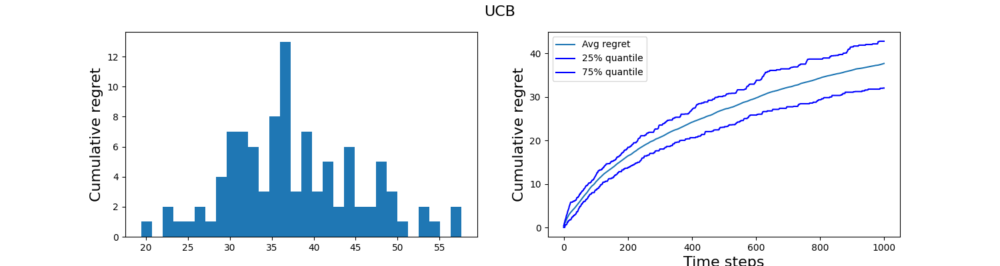

THEORY: Upper confidence bound and Thompson Smapling strategies
Odalric-Ambrym Maillard
HORIBA
April 22, 2025

Roadmap
- Uncertainty of the mean estimate
- Balancing exploration and exploitation
- The
Upper Confidence Bound (UCB) stragegy - Stability and regret
- A Bayesian view on uncertainty
- The
Thompson Sampling (TS) strategy - Stability and regret
The Upper Confidence Bound (UCB) stragegy
Replace \( \hat m_t(a)\) with \( m^+_t(a) \) where
\(m^+_t(a) = \hat m_t(a) + \sqrt{\frac{\ln(t^2(t+1))}{2N_t(a)}}\)
is Upper value of the Confidence Interval.
The Upper Confidence Bound (UCB) stragegy
Theorem: Consider a bandit \(\mdp=(m_1,\dots,m_A)\) with rewards all bounded in \([0,1]\).
Denote \(\Delta_a= m^\star-m_a\) the mean gap of an arm \(a\in\cA\)
Then, the
\( \kR_T(\mdp,\texttt{UCB}) \leq \sum\limits_{a\in\cA} \frac{6\ln(T)}{\Delta_a} + 3\Delta_a\)
Proof sketch
If \(A_{t+1}=a\) is sub-optimal, by definition of the chosen arm
\( {\color{yellow} \hat \mu_{a}(t) + \sqrt{ \frac{\ln(1/\delta_t)}{2N_t(a)}}} \geq {\color{cyan} \hat \mu_{\star}(t) + \sqrt{ \frac{\ln(1/\delta_t)}{2N_t(\star)}}}\,. \)
Now, on an event of probability higher than \(1-\delta_t\),
\( {\color{cyan} \hat \mu_{\star}(t) + \sqrt{ \frac{\ln(1/\delta_t)}{2N_t(\star)}}} \geq \mu_{\star}\,. \)
\( \mu_{a} + 2 \sqrt{ \frac{\ln(1/\delta_t)}{2N_t(a)}} \geq {\color{yellow} \hat \mu_{a}(t) + \sqrt{ \frac{\ln(1/\delta_t)}{2N_t(a)}} }\,. \)
By a union bound argument, we deduce:
For each sub-optimal \(a\in\cA\), with probability higher than \(1-2\delta_t\), if \(A_{t+1}=a\), then
\( \mu_{a} + 2 \sqrt{ \frac{\ln(1/\delta_t)}{2N_t(a)}} \geq \mu_\star \quad \text{ that is}\ \)
\( N_t(a) \leq \frac{2\ln(1/\delta_t)}{\Delta_a^2} \)
A Bayesian strategy
-
Frequentist view: \(m_1,\dots,m_A\) are
parameters to be estimated. -
Bayesian view: \(m_1,\dots,m_A\) are
random variables to be sampled.
- Put a prior on \(m_a\sim \pi_a(0)\),
- Compute a posterior distribution \(\pi_a(t)\) from observations
For Bernoulli, and uniform prior \(\pi_a(0)=U([0,1])\), posteriors are Beta-distribution:
\( \pi_a(t) = \text{Beta}(S_a(t)+1, N_a(t)-S_a(t)+1) \)
where \(S_a(t) =\sum\limits_{s=1}^t \mathbb{1}[a_s=a,r_s=1]\) counts number of 1 received.
Posterior updates and bandit strategy
A Bayesian bandit algorithm exploits the posterior distributions of the means to decide which arm to select.
Thompson sampling strategy:
At time \(t\),
then pull arm \( a_t=\Argmax\limits_{a\in\cA} \, \tilde m_a(t) \)
Optimality of TS
Then, the
\( \limsup\limits_{T\to\infty} \frac{\kR_T(\mdp,\texttt{TS})}{\ln(T)} \leq \sum\limits_{a\in\cA} \frac{\Delta_a}{\KL(\cB(m_a),\cB(m_\star))}\)
Stability and regret
